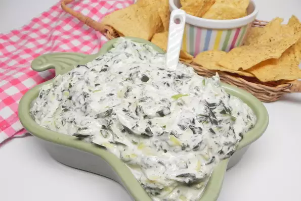

Slow Cooker Spinach-Artichoke Dip

Description
This slow cooker spinach-artichoke dip is easy to make and delicious!
Ingredients
- 1 (14 ounce) can artichoke hearts, drained and chopped
- 1 (9 ounce) package frozen spinach
- 1 (8 ounce) package cream cheese
- ¾ cup shredded mozzarella cheese
- ½ cup shredded Parmesan cheese
- ¼ cup milk
- salt and ground black pepper to taste
Step
- Combine artichokes, spinach, cream cheese, mozzarella cheese, Parmesan cheese, milk, salt, and pepper in the bottom of a slow cooker.
- Cover and cook on High, stirring occasionally to combine, for 2 hours.
Return Home